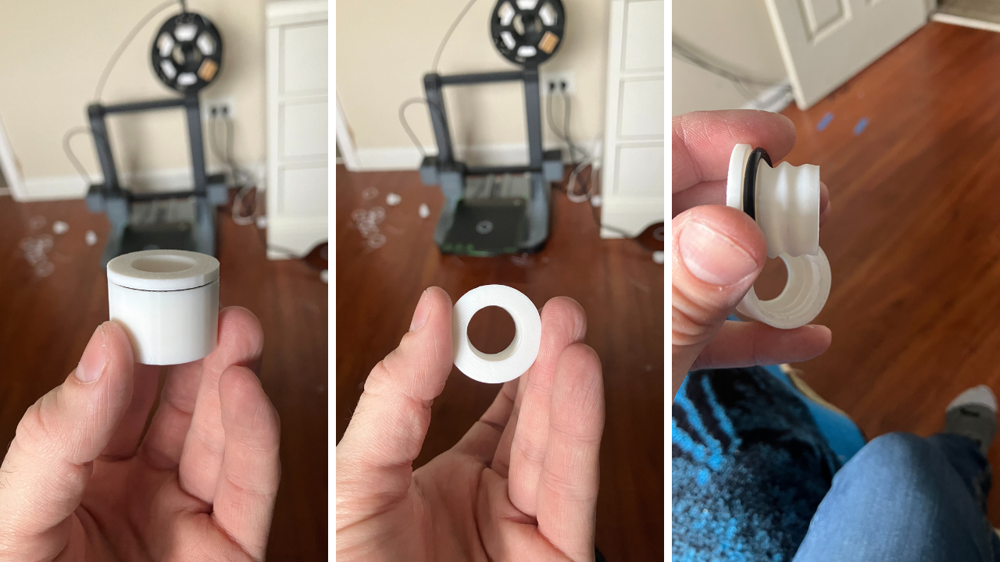

This was found through iterative testing. We iteratively found the right tolerance for a one degree screw cap receiver. This was done through 3d printing and testing fits. From there, to apply our findings, we multiplied that tolerance by the growth rate of associated with each degree. This led us to the right tolerance for a 5 degree helix screw cap and saved a lot of time and materials."
For this application, I simulated a water tight screw cap onto a receiver involving a rubber o-ring. This application is part of a greater developing and ongoing project, but it was a great lesson in parametric design, incorporating math modeling and programming to save time and materials, and in learning the material properties of rubber and how it allows for effective water tightness.
